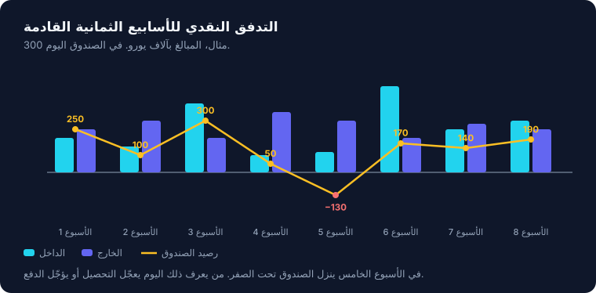
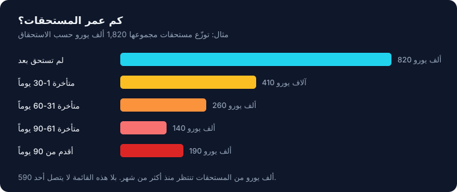

لماذا تحتاجون برنامجاً للمتابعة المالية والمحاسبة؟
كثير من أصحاب الشركات يقولون «عندنا محاسبة» ويقصدون المحاسب القانوني. المحاسب القانوني يسجّل الفواتير ويقدّم الإقرارات الضريبية ويمسك الدفاتر الرسمية. لكن جواب أسئلة مثل «لمن سندفع هذا الأسبوع وكم، وممّن سنقبض، وهل نكمل الشهر» ليس عنده. هذه الأسئلة تنتظر جوابها داخل الشركة، وغالباً في ذهن صاحبها وفي ملف Excel.

هناك محاسبتان
الأولى هي المحاسبة الرسمية التي تُمسك تجاه الدولة. تنظر إلى الماضي، قواعدها محدّدة، ويتولاها المحاسب القانوني. والثانية هي السجل الذي تمسكه الشركة لتدير نفسها، ويسمّى المحاسبة اليومية أو المتابعة المالية. تنظر إلى اليوم وإلى الأسابيع القادمة.
الأولى رتّبها الجميع بشكل أو بآخر لأنها إلزامية. أما الثانية فمبعثرة في معظم الشركات: حسابات العملاء والمورّدين في ملف Excel، والشيكات في دفتر مواعيد، وحركات البنك في الخدمة المصرفية عبر الإنترنت، وأقساط القروض في ملف آخر. والمكان الوحيد الذي يراها كلها مجتمعة هو ذهن صاحب الشركة.
في الصندوق مال اليوم، فماذا عن بعد ثلاثة أسابيع؟
المتابعة المالية في معظم الشركات تعني النظر إلى حساب البنك صباحاً. إن كان في الرصيد مال فالأمور بخير. لكن الرصيد يُظهر اليوم فقط. لا يُظهر الشيك الذي يستحق الأسبوع القادم، ولا رواتب منتصف الشهر، ولا دفعة ضريبة القيمة المضافة، ولا تحصيلاً تأخّر فيه العميل.

وهذا سبب وقوع الشركات الرابحة أيضاً في ضيق نقدي. البيع تمّ، والفاتورة صدرت، والربح تحقّق على الورق. لكن إذا كان التحصيل بعد ستين يوماً والدفع للمورّد بعد ثلاثين، فلا بد من سدّ الفجوة بينهما من مكان ما. الشركة التي ترى ذلك قبل خمسة أسابيع تجري حديثاً هادئاً مع البنك. والتي تنتبه في اليوم الأخير تأخذ أغلى قرض تجده.
المستحقات التي لا تُحصَّل
أكثر ما نصادفه في الشركات التي نلتقيها أن يُعرف مَن عليه دين وكم، ولا يُعرف منذ متى. في قائمة الحسابات عشرون عميلاً وإلى جانب كل منهم مبلغ. أيّهم تجاوز موعد استحقاقه، وأيّهم لم يدفع منذ ثلاثة أشهر؟ لا يُفهم ذلك من القائمة.

حين لا يُتَّصل بالعميل بشأن دين تجاوز موعده، لا يستعجل هو أيضاً، ويدفع لمن يطالبه أولاً. قائمة بسيطة تُظهر عمر المستحقات، مع اتصالات منتظمة مرة في الأسبوع، تقصّر مدة التحصيل بشكل واضح.
وخسارة مشابهة تحصل في الفوترة. العمل سُلِّم، لكن إصدار الفاتورة يحتاج أن يجمع أحدهم سندات التسليم، فيتأجّل ذلك إلى آخر الشهر. ولأن الفاتورة صدرت متأخرة يبدأ أجل الدفع متأخراً ويصل المال متأخراً.
ماذا يجمع البرنامج المالي؟
يجمع القطع المذكورة أعلاه في سجل واحد. حين تصدر فاتورة مبيعات تُقيَّد تلقائياً في حساب العميل وفي جدول الاستحقاقات. وحين تُدخَل فاتورة مشتريات تُضاف إلى قائمة المدفوعات. والشيكات والسندات وأقساط القروض والرواتب موجودة في الجدول الزمني نفسه.
وحين تجتمع هذه السجلات يخرج جدول النقد للأسابيع القادمة تلقائياً. لا تحتاجون أن تسألوا أحداً «ماذا سندفع هذا الشهر».
الفوترة ترتبط بالمبيعات. الطلب الذي سُلِّم يتحول إلى فاتورة بنقرة واحدة ويُرسَل فاتورةً إلكترونية. وحالة «انتهى العمل ولم تصدر فاتورته» تظهر على الشاشة في قائمة مستقلة.
حركات البنك تُنقل إلى النظام وتُطابَق مع السجلات. فيُعرف أيّ تحصيل يعود إلى أيّ فاتورة، وما هي الحركات التي لم تُطابَق.
والمصاريف تُصنَّف أيضاً. كم يصرف كل قسم وكل مشروع وكل سيارة؟ يخرج ذلك آخر الشهر ببضع نقرات. وما بعد ذلك يتصل بموضوع قياس ربحية المشاريع.
كيف يُقسَّم العمل مع المحاسب القانوني؟
السجل المنظَّم داخل الشركة يسهّل عمل المحاسب القانوني أيضاً. بدلاً من إرسال كيس فواتير آخر الشهر، تحوّلون إليه سجلات مصنَّفة ومطابَقة. ويمكنكم مقارنة الجدول الذي يأتيكم منه بسجلكم.
في معظم الشركات لا يلزم تغيير البرنامج الذي يستخدمه المحاسب القانوني. النظام الداخلي يُخرج البيانات بالصيغة المناسبة لبرنامجه. وهناك شركات تريد إدخال المحاسبة الرسمية كلها إلى الداخل، لكن هذا قرار مستقل وليس شرطاً أن يكون الخطوة الأولى.
متى يصبح لازماً؟
- إذا تجاوز عدد الفواتير الصادرة والواردة في الشهر مئة فاتورة.
- إذا كنتم تبيعون بالآجل وتشترون بالآجل.
- إذا كان جدول الشيكات أو السندات أو أقساط القروض في دفتر شخص واحد.
- إذا كانت معرفة مَن عليه دين ومنذ كم يوم تأخذ منكم نصف ساعة.
- إذا كنتم لا تستطيعون ذكر الوضع النقدي للشهر القادم بالأرقام.
من أين نبدأ؟
أسرع موضوعين في إعطاء النتيجة هما حسابات العملاء والمورّدين ومتابعة الاستحقاقات. أدخلوا إلى النظام أرصدة العملاء والمورّدين والفواتير المفتوحة ومواعيد استحقاقها. هذا القدر وحده يكفي لتروا قائمة المستحقات ومدفوعات الأسابيع القادمة.
الخطوة الثانية ربط الفوترة بالمبيعات، والثالثة المطابقة البنكية. تصنيف المصاريف والموازنة يمكن أن يبقيا إلى الآخر.
أما الأدوات فهناك برامج تقتصر على المحاسبة اليومية، وأنظمة ERP تعمل مع المبيعات والمخزون، وحلول تقع بينهما. إذا كانت المبيعات والمخزون والمشتريات في نظام آخر فلا بد أن تتحدث المالية معها، وإلا أُدخلت كل فاتورة مرتين. نحن ننظر إلى هذا الربط أولاً عند الاختيار.
أسئلة شائعة
لدينا محاسب قانوني، فهل نحتاج إلى هذا أيضاً؟
هما عملان مختلفان. المحاسب القانوني يمسك السجل الرسمي للفترة الماضية. أما المتابعة المالية فتُظهر وضع المستحقات والديون والنقد اليوم، وهي لازمة لقرارات الشركة اليومية.
نستخدم برنامج محاسبة بسيطاً، أليس كافياً؟
قد يكفي لمتابعة حسابات العملاء والفواتير. ما ينقصه غالباً هو الربط مع المبيعات والمخزون والمشاريع. إذا كنتم تُدخلون المعلومة نفسها في نظامين، أو ما زلتم تُعدّون جدول النقد في Excel، فقد حان وقت النظر إلى الخطوة التالية.
هل يلزم نقل السجلات القديمة؟
ليس كلها. تكفي الفواتير المفتوحة، وأرصدة العملاء والمورّدين الحالية، والشيكات والسندات التي لم يحن استحقاقها. السجلات القديمة المغلقة يمكن أن تبقى في مكانها.
خدماتنا ذات الصلة: حلول ERP للشركات الصغيرة والمتوسطة، استشارات التحول الرقمي.
كم تكلفك المتابعة بالملفات سنوياً؟
احسب التكلفة السنوية لإعادة الإدخال والتقارير المُعدّة يدوياً والأخطاء الناتجة عن الملفات.
افتح الحاسبةلنُعدّ جدول النقد لشركتكم معاً
لنرَ معاً مقبوضات ومدفوعات الأسابيع الثمانية القادمة.
لنتحدث عن مشروعكم